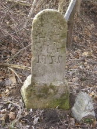
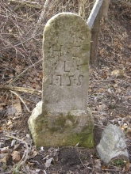

Hraniční kameny na lichtenštejnských panstvích
Panství Lednice a Valtice

 Foto: Lada Rakovská.
FICVL = Fürst Iohann Carl von Liechtenstein (kníže Jan Nepomuk Karel z Liechstensteinu). FL = Fürst Liechtenstein.

Foto: Dieter Friedl.
H:E:L: = Herrschaft Eisgrub (panství Lednice), Liechtenstein (Lichtenštejn jako název šlechtického rodu).
Foto: Lada Rakovská.
FICVL = Fürst Iohann Carl von Liechtenstein (kníže Jan Nepomuk Karel z Liechstensteinu). FL = Fürst Liechtenstein.

Foto: Dieter Friedl.
H:E:L: = Herrschaft Eisgrub (panství Lednice), Liechtenstein (Lichtenštejn jako název šlechtického rodu).